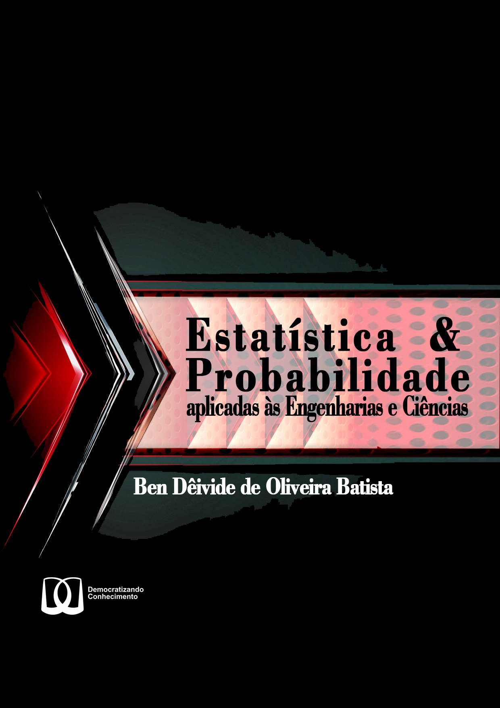

Estatística & Probabilidade
aplicadas às Engenharias e Ciências
2022-09-02
Bem-vindo
 Esse é um livro digital da 1ª edição do “Estatística & Probabilidade aplicado às Engenharias e Ciências”, um livro com o selo Democratizando Conhecimento (DC). O Livro é voltado para quem deseja iniciar no estudo sobre a estatística. Daremos as bases e fundamentos, de modo aplicado a problemas na área das Engenharias e Ciências, de assuntos desde o que é uma população, amostra, até estudos sobre a teoria de decisão, estudo de regressão, dentre outros assuntos básicos, para que assim, a partir desse material, o leitor tenha base para ler, assuntos mais aprofundados na área da estatística.
O número de leitores que acessaram esse livro:Sugestões e críticas
Sugestões e críticas sobre o livro podem ser enviadas para livrosdeben@gmail.com.
Licença

Este trabalho está licenciado com uma Licença Creative Commons - Atribuição-NãoComercial 4.0 Internacional.